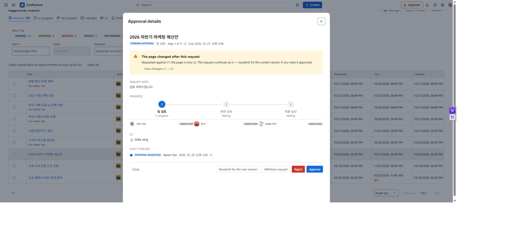
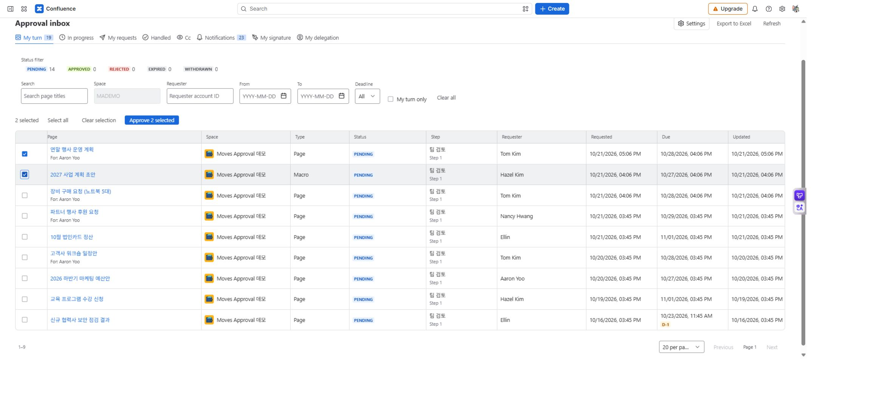

Approve, reject, and bulk approve
Review the target page and version when your step is active. A step advances when its required count is met; a rejection ends the entire request.
Requirements: Page view permission and an active approver or valid delegate role. Set up your PIN first if required by policy.
Review and decide
- Open a request under Approval inbox → My turn.
- Read the request note, target version, current step, and earlier decisions.
- If the page has changed, use View changes to compare versions. For an area request, inspect images and attachments on the source page as well as the text preview.
- Select Approve if you agree. Otherwise select Reject, enter a reason, and confirm. A reason is required by default.
- Enter your PIN if requested, then check that the decision is recorded.

MA-06 · The widened details dialog keeps the target version, step state, audit trail, and decision controls together.
Decision results
| Action | Change | Expected result |
|---|---|---|
| Approve | Records your decision | The next step opens once the required count is met. |
| Pass the final step | Changes the overall status | The request becomes approved. |
| Reject | Changes the overall status | The request ends immediately without waiting for others. |
| Cancel / Back | Closes an unconfirmed dialog | Does not undo an already confirmed decision. |
Rejection reasons remain in request history. With Confluence notifications enabled, page comments may also expose them to other page readers.
Approve several requests
Under My turn, review each page and target version before selecting its checkbox. Use Approve N selected to process up to 50 requests. Enter a required PIN once for the batch.
Check the approved and failed counts. For failures, recheck the latest status, permissions, and deadline. Overdue requests cannot be selected. Rejections are handled individually.

MA-07 · Selection state before bulk approval. Review the per-request success and failure result after processing.
When a decision is unavailable or mistaken
Check earlier steps, finished status, deadline, and page permission. Confirmed decisions cannot be reversed. An open request can be withdrawn by its requester and replaced; a finished request requires a new request. See changes, withdrawal, and resubmission.